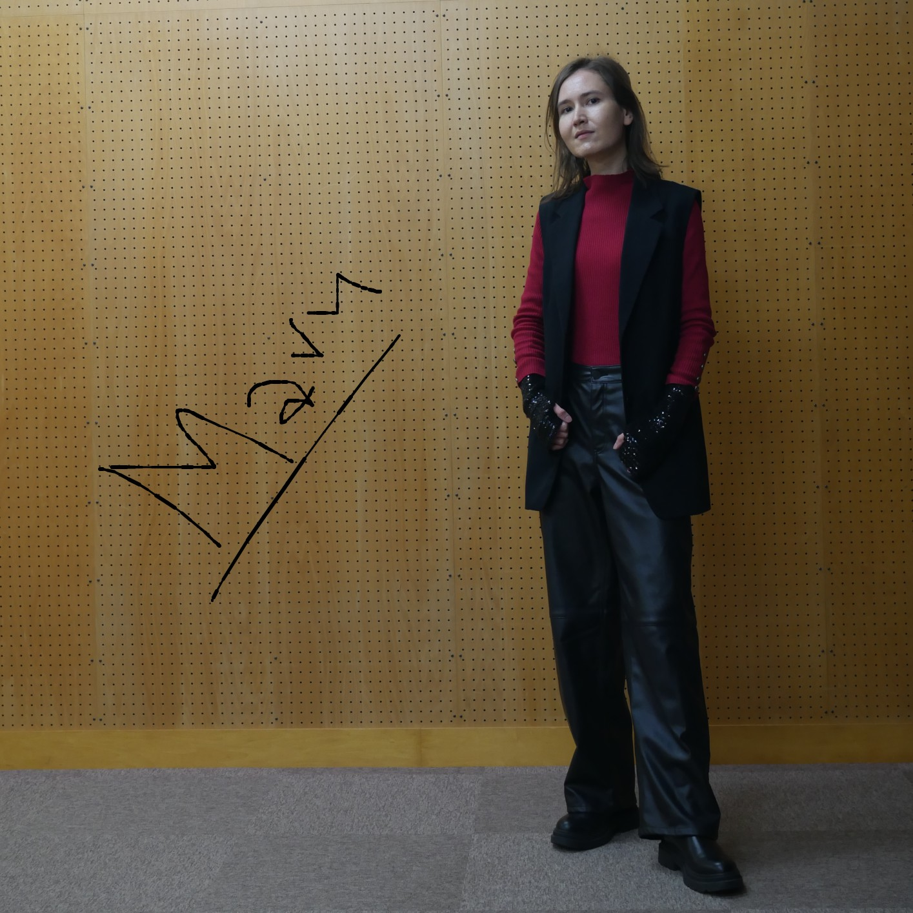

About
Hi, and thank you for visiting my profile page. I'm a 1st-year Master's student in Computer Science at the Institute of Science Tokyo (formerly Tokyo Institute of Technology), currently conducting research in the Inoue Lab.
My academic interests lie at the intersection of natural language processing (NLP) and computer vision, with a strong passion for Large Language Models, Vision-Language Models, and their potential to support language learning.
I am also a huge fan of the Natural Approach and Comprehensible Input theory, and I believe that the age of AI offers an exciting opportunity to rethink and improve how we teach and learn languages.